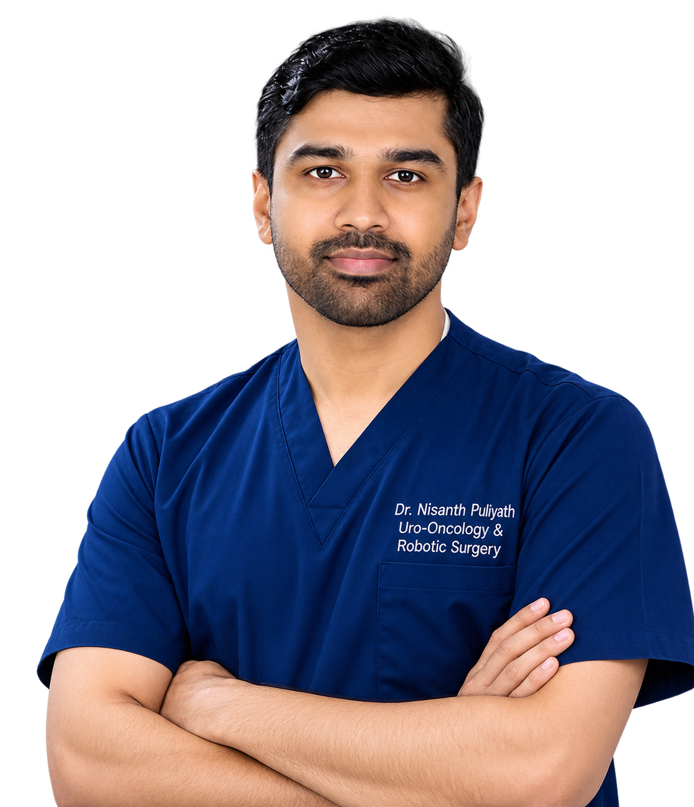
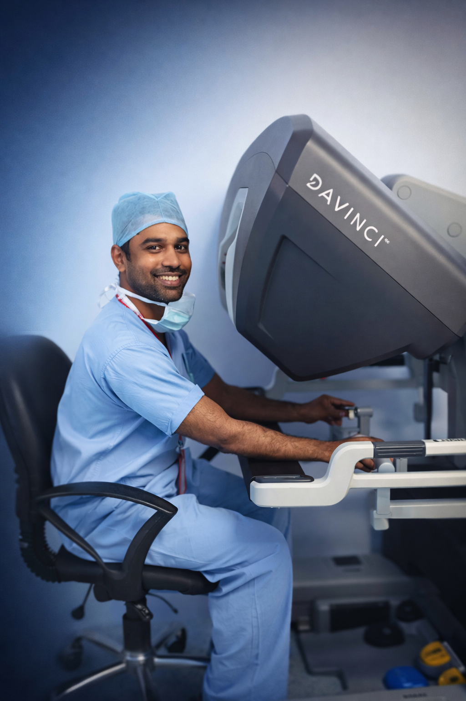

Urology · Uro-Oncology · Robotic Surgery · Focal Therapy
Robotic and focal treatment for prostate, kidney and bladder cancer in Kerala, India, with the reasoning behind every recommendation set out in language you can act on.
MBBS · MS (AIIMS) · MCh (Urology)
Fellowship trained Uro-Oncologist & Robotic Surgeon (Vattikuti Foundation)
Clinical Visiting Fellowship, Robotic Surgery & Focal Therapy (USA)


About
A good operation starts with a decision you understand and agree with.
I am a urologist working in robotic uro-oncology, meaning minimally invasive surgery for cancers of the prostate, kidney and bladder, alongside focal therapy for men who are suitable for treatment targeted to the tumour rather than the whole gland.
I completed MBBS and MCh Urology at Government Medical College Kozhikode, with MS General Surgery at AIIMS in between. I then trained in robotic surgery and uro-oncology at Medanta, Gurugram, through the Vattikuti Fellowship, with further training as a visiting fellow at international centres of excellence, including Johns Hopkins, UC San Diego and AdventHealth Orlando, where I learned focal therapy and robotic uro-oncology from surgeons who helped develop these techniques.
I now offer these treatments here in Kerala: MRI-fusion and transperineal biopsy, HIFU and cryotherapy for suitable men, and nerve-sparing robotic prostatectomy. This site exists so you can arrive at a consultation already knowing what your diagnosis means and which questions matter.
Conditions & treatments
Each card opens a plain-language explanation: what the condition is, how it is assessed, and what treatment actually involves. Tap any one to read more.
Robotic radical prostatectomy with nerve-sparing technique, plus surveillance and focal options for suitable disease.
Read more →Treating the tumour rather than the whole prostate, for carefully selected men. Still uncommon in this region.
Read more →Robotic partial nephrectomy to remove the tumour and keep the kidney, or radical surgery for larger tumours.
Read more →Live donor and deceased donor transplantation, including donor nephrectomy and the work-up that decides suitability.
Read more →Minimally invasive removal of adrenal tumours, including hormone-producing lesions that drive blood pressure.
Read more →From TURBT and BCG for early disease through to robotic cystectomy with urinary reconstruction.
Read more →Targeting the biopsy to what the MRI actually shows, through the skin rather than the rectum.
Read more →Highly curable cancers of young and older men, where surgical timing and node management drive the outcome.
Read more →Urinary symptoms from a benign prostate. Medication first, with laser and endoscopic surgery when it is needed.
Read more →Ureteroscopy, RIRS and PCNL for kidney and ureteric stones, with a plan to stop them coming back.
Read more →Academic profile
Medical education
Government Medical College, Kozhikode · Kerala
All India Institute of Medical Sciences (AIIMS) · Rishikesh
Government Medical College, Kozhikode · Kerala
Robotic fellowship
Medanta, The Medicity · Gurugram
Clinical visiting fellowships, United States
Johns Hopkins Hospital · Baltimore, Maryland
University of California San Diego · California
AdventHealth · Orlando, Florida
Predicting pathological upstaging in prostate cancer: an artificial neural network integrating PSMA PET, PSA and MRI in a South Asian cohort
Journal of UrologyA prospective randomised controlled trial comparing 5 Fr and 6 Fr ureteral stents on stent-related symptoms following ureterorenoscopy
European Urology · 2026UCF-04 Global Residents Leadership Retreat (GRLR) by AUA: a one-of-a-kind global urology event, a participant’s experience
Journal of UrologyRecent trends in the management of high-risk non–muscle-invasive bladder cancer: a review article
JASUChromobacterium violaceum: an uncommon source of urinary tract infection, a case study with review of literature
Tropical Doctor · 2025The thermal effect of lasers in urology: a review article
Lasers in Medical Science · 2024Navigating the unregulated terrain of testosterone boosters: a growing concern in men’s health
The Aging Male · 2024Fifteen-year outcomes of the ProtecT trial: should patients be “protected” from radical treatments?
Indian Journal of Urology · 2023Undiagnosed bilateral complete cervical rib with subclavian artery aneurysm presenting as acute ischaemic limb following high-altitude expedition
BMJ Case Reports · 2021Giant splenic artery aneurysm with extrahepatic portal vein obstruction, a rare entity: case report with literature review
Journal of Medical Evidence · 2021Gossypiboma presenting as a non-healing post-operative wound: an atypical presentation of a rare surgical complication
Sri Lanka Journal of Surgery · 2021BJS commission on surgery and perioperative care post-COVID-19
British Journal of SurgeryThe utility of telemedicine in general surgery during the COVID-19 pandemic and beyond: our experience
IJCMPR · 2020Utility of triple tumour markers CA 19-9, CA 125 and CEA in predicting advanced stage carcinoma of the gallbladder: a retrospective study
International Surgery Journal · 2020Use of N-acetyl cysteine to retrieve an entrapped Malecot catheter in the liver: an old agent for a novel application
Tropical Doctor · 2020Multiple national and international presentations, including:
Member of international, national and state urological and medical associations.
Robotic surgery
It is an instrument, not an autonomous system. Every movement comes from my hands at a console a few feet from the table. What it adds is vision, reach and steadiness inside spaces where millimetres decide the result.
Vision
The console gives a stereoscopic view magnified up to tenfold. Nerve bundles and vessels that are hard to define through an open incision become distinct structures you can work around deliberately.
Control
The instruments rotate further than a human wrist, and the system filters out tremor. That matters most during nerve-sparing dissection and when reconstructing the urinary tract afterwards.
Recovery
Four to five small incisions instead of one long one means less blood loss and less pain. Most patients are walking the next day and home within a few days, without trading away cancer control.
Videos
Short talks on the conditions and procedures I treat, for patients and families who would rather watch than read.
Get in touch
A new diagnosis, a second opinion, or a question about a procedure you have been offered: all are welcome. Email is the most reliable way to reach me, and I reply as soon as clinical work allows.
Kerala, India
Urology · uro-oncology · robotic surgery · focal therapy
A cancer arising in the prostate, the gland that sits below the bladder and produces part of the seminal fluid. It is the most common cancer in men over 50, and among the most treatable when it is found while still confined to the gland.
A PSA blood test is usually the first step. If it is raised, an MRI comes next, and a targeted biopsy only if the MRI shows something suspicious. The biopsy gives a Gleason score and grade group; the MRI and, where needed, a PSMA PET scan give the stage.
In selected men, prostate cancer is confined to one part of the gland. Focal therapy destroys that area and leaves the rest of the prostate intact. It sits between surveillance and removing or irradiating the whole gland.
Both are day-case or short-stay procedures done under anaesthesia, with no surgical incision.
It depends on accurate mapping: a good quality MRI and, usually, a transperineal or fusion biopsy showing disease in one region only. It is not appropriate for high-risk or widespread cancer, and it commits you to close follow-up afterwards, since the untreated prostate remains.
Renal cell carcinoma is the commonest type, arising from the lining of the kidney tubules. Most cases today are found by chance on a scan done for something else, before any symptoms appear.
The classical triad of blood in the urine, flank pain and a palpable mass is now rare, and usually indicates advanced disease. Most patients feel entirely well.
Painless blood in the urine is the classic sign. A single episode that clears up on its own still needs investigating, because that is the point at which the disease is most treatable.
Urine has to be rerouted, either into an ileal conduit with a stoma bag or a neobladder reconstructed from bowel. Which suits you depends on the tumour, kidney function and how you want to live afterwards, and it is worth discussing in detail before surgery.
An older-style random biopsy samples the prostate blindly and can miss significant cancer or find insignificant disease. Fusion biopsy overlays your MRI onto live ultrasound so the needle goes to the lesion the radiologist actually flagged.
The needle passes through the skin between the scrotum and anus rather than through the rectal wall. This substantially reduces the risk of serious infection and gives better access to the front of the gland, where tumours are otherwise easy to miss.
It is usually a day procedure under sedation or general anaesthesia. Blood in the urine or semen for a few weeks afterwards is expected and settles on its own.
The commonest solid tumour in men aged roughly 15 to 35, and one of the most curable cancers in medicine even when it has spread. A painless lump or firmness in one testis needs an ultrasound scan promptly, not a wait-and-see approach.
Treatment begins with removal of the affected testis, which is both diagnostic and therapeutic. What follows (surveillance, chemotherapy, or retroperitoneal node surgery) depends on the type and stage. Sperm banking should be discussed before chemotherapy.
Uncommon, usually a squamous cell carcinoma. Any sore, lump or growth that has not healed within about four weeks should be biopsied rather than treated repeatedly with creams.
Where it is oncologically safe, penile-preserving surgery is preferred. Management of the groin lymph nodes has a large effect on survival and is decided by the risk profile of the tumour.
Benign prostatic hyperplasia is non-cancerous enlargement of the prostate, affecting most men to some degree with age. It is not cancer and does not turn into cancer.
A slow stream, hesitancy before starting, waking at night to pass urine, urgency, and a sense of not emptying fully.
Recurrence is common and largely preventable. Stone analysis and a metabolic evaluation identify why the stone formed, which turns treatment into a plan rather than a repeated procedure.
For most people with kidney failure, a transplant offers a longer life and a freer one than remaining on dialysis. It is an operation on two people at once when the donor is living, so the assessment is as important as the surgery.
The new kidney usually starts working within days. Lifelong immunosuppression is needed, with regular blood tests to balance rejection risk against infection risk.
The adrenal glands sit above each kidney and produce hormones that control blood pressure, salt balance and the stress response. A tumour there may be silent and found incidentally on a scan, or it may announce itself through hormone effects.
Most adrenalectomies are performed laparoscopically or robotically through small incisions, usually with an overnight or two-night stay. Hormone-producing tumours need careful preparation with medication beforehand, and close monitoring of blood pressure during surgery.